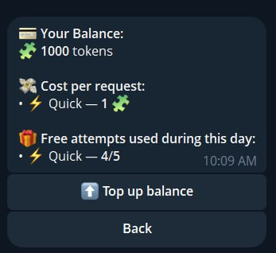
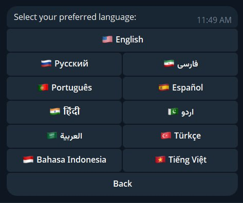
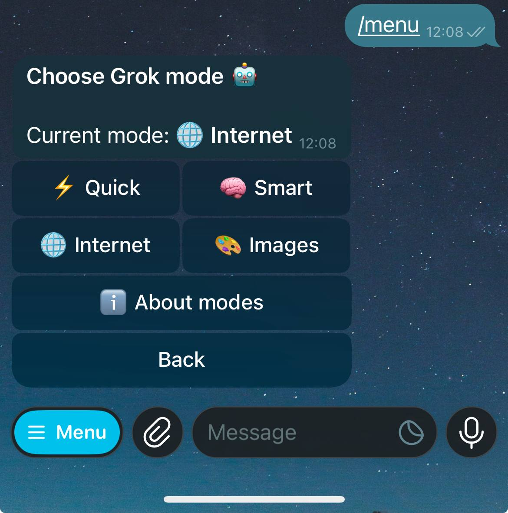
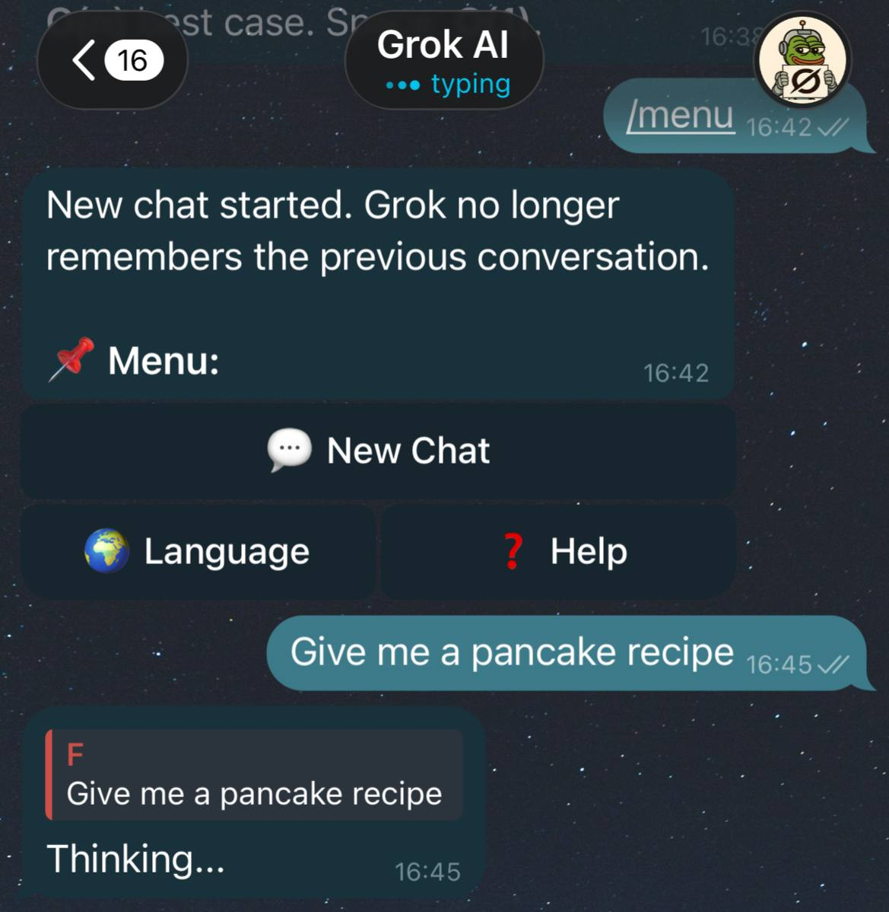
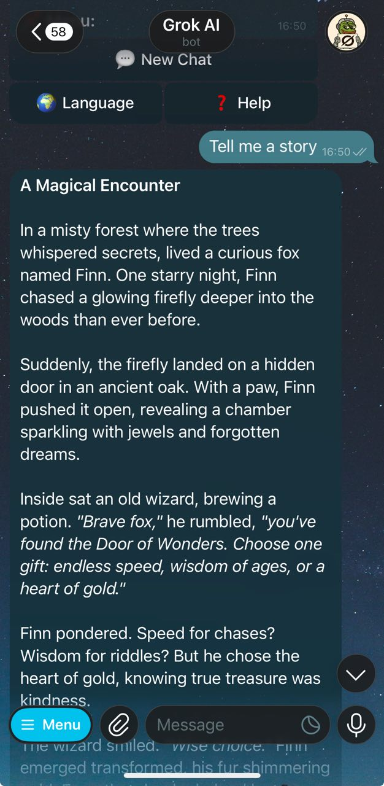
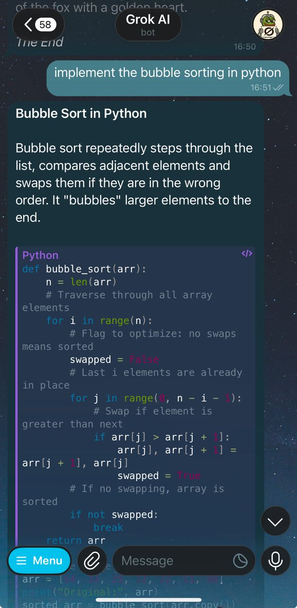

The first real Grok 4 Telegram bot — use Grok directly in
Telegram. The bot is powered by the official Grok 4 API. Free requests, image
generation, and instant start.
Looking for an official Grok AI Telegram bot? The official
xAI Telegram integration failed and is not working, so this is a
working replacement bot in Telegram.
If you searched for an official Grok/xAI Telegram bot and it is not
available for you, use this alternative that runs on the official
Grok API.
This is an independent bot, not an official xAI Telegram account.
Popular Search Queries
This page targets queries like: grok telegram bot,
grok ai telegram bot, grok ai telegram bot official,
official grok bot on telegram, and
grok xai telegram bot official.
For grok telegram prompts, see the prompt examples below and
detailed usage on How It Works.
Grok Telegram Prompts
Examples you can send right after /start:
"Summarize today's AI news in 5 bullets."
"Explain this code and suggest optimizations."
"Create a 7-day study plan for Python beginners."
"Generate 3 logo concepts for a fintech startup."
Why Cyberfrog
Grok AI Telegram Bot is a free Telegram chatbot powered by
Grok 4, the latest AI model by xAI.
We built what people expected from Grok inside Telegram: a real AI
that responds naturally and works directly in chat.
You can chat, generate images, and use the bot in
any language.
What you get
Direct access to Grok inside Telegram.
Free requests refreshed daily.
Image generation mode.
The bot understands images: send pictures and get a response.
Short context memory for coherent dialogue.
New Chat button for instant context reset.
Balance top-up via Telegram Stars.
How to start
Open the bot and send /start.
Pick interface language from 11 available options.
Subscribe to our group to stay informed about updates and changes.
Send your question and get a Grok response.
How it looks
Real bot UI screenshots: balance, modes, languages, typing indicator,
and response examples.

Balance, daily free attempts, and Quick mode cost.

Language selector with 11 supported interface languages.

Mode selector: Quick, Smart, Internet, and Images.

Each answer is sent as a reply to your message.

Formatted long response for easier reading.

Code response with readable sections and code blocks.